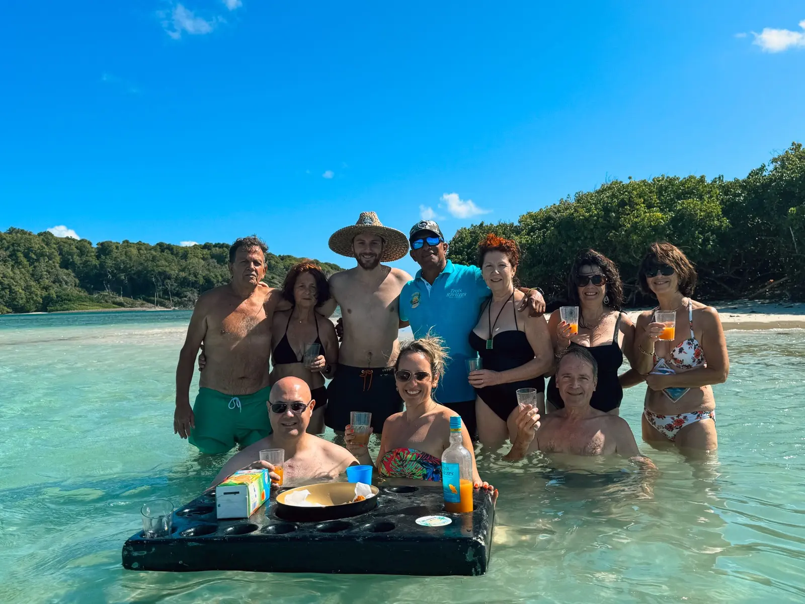

85 €par pers.
La plus demandée
La journée avec déjeuner
9 h → 16 h · tous les jours
- Îlet Chancel et ses iguanes
- Baignoire de Joséphine et Trapèze
- Snorkeling, planteur et accras
- Repas créole, dessert et café
Moins de 6 ans : 40 €
Je réserve celle-là